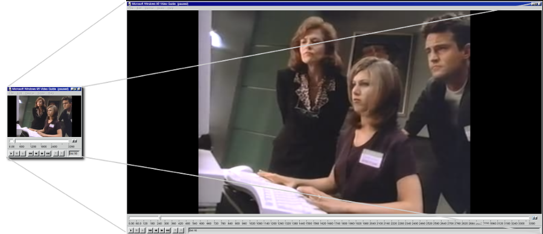
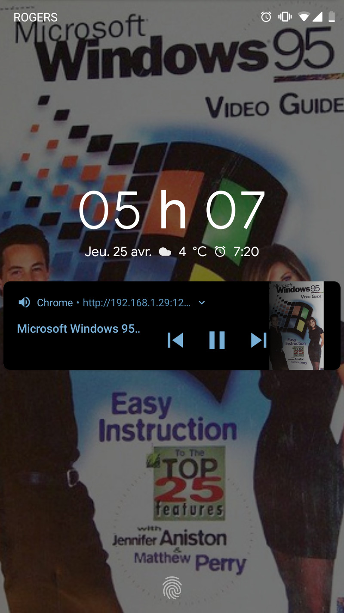
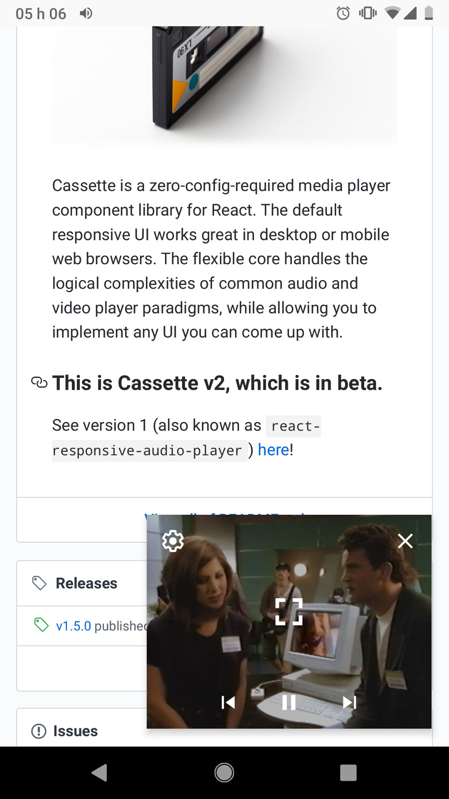

It's back from 1995.. and running on your website!
npm install win95-media-player
Try it out now!
Maximize your window for an immersive Win95 experience:

It also does modern stuff it shouldn't... like integrate with your mobile OS!

